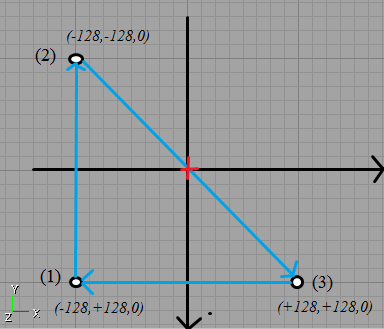
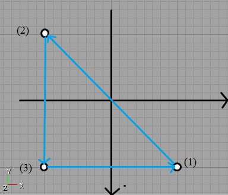

I'm a doctor, not a mechanic
Legacy:T3D StaticMesh
From Unreal Wiki, The Unreal Engine Documentation Site
T3D Staticmeshes files are generated with the UCC command in order to export all StaticMeshes data from package or level. It creates one .t3d file for each unique staticmesh found in the package. They are exported using this command:
ucc batchexport myPackage StaticMesh T3D
Sample File: Some basic triangle in Unreal Editor
Begin StaticMesh Name=TriOriginal Version=2.000000 BoundingBox.Min.X=-128.000000 BoundingBox.Min.Y=-128.000000 BoundingBox.Min.Z=0.000000 BoundingBox.Max.X=128.000000 BoundingBox.Max.Y=128.000000 BoundingBox.Max.Z=0.000000 //Unknown effect Begin Triangle Texture SMTest.Tex.256x256 //Texture applied to the triangle SmoothingMask 0 //Unknown effect Vertex 0 128.000000 128.000000 0.000000 1.000000 0.000000 //Vertex Coordinates (x,y,z)+ Texture U,V data Vertex 1 -128.000000 -128.000000 0.000000 0.000000 -1.000000 Vertex 2 -128.000000 128.000000 0.000000 0.000000 0.000000 End Triangle End StaticMesh
The vertices are ordered differently from the last one to the first one if we compare with T3D brush.
T3D Brush Drawing:

T3D Brush data:
Vertex -00128.000000,+00128.000000,+00000.000000
Vertex -00128.000000,-00128.000000,+00000.000000
Vertex +00128.000000,+00128.000000,+00000.000000
T3D StaticMesh Drawing:

Converting T3D StaticMeshes to ASE file[edit]
These T3D files can be used and converted as ASE (3D Ascii Scene) files in order to convert staticmeshes to UT3 as the UT3 editor allows to import .ase files.
Here is the algorithm to use (.ase file data):
*3DSMAX_ASCIIEXPORT 200 *MATERIAL_LIST { *MATERIAL_COUNT 1 //Always 1 *MATERIAL 0 { *MATERIAL_NAME "Default Material" *MATERIAL_CLASS "Multi/Sub-Object" *MATERIAL_AMBIENT 1.0000 1.0000 1.0000 *MATERIAL_DIFFUSE 1.0000 1.0000 1.0000 *MATERIAL_SPECULAR 1.0000 1.0000 1.0000 *NUMSUBMTLS 1 //Num of unique different textures used in the staticmesh *SUBMATERIAL 0 { *MATERIAL_NAME "256x256" //Name of the texture used (without group and package info) *MATERIAL_AMBIENT 1 1 1 *MATERIAL_DIFFUSE 1 1 1 *MATERIAL_SPECULAR 1 1 1 *MAP_DIFFUSE { *MAP_NAME "Map #0" *MAP_CLASS "Bitmap" *MAP_SUBNO 1 *MAP_AMOUNT 1 *BITMAP "256x256" //Name of the texture used (without group and package info) *MAP_TYPE Screen *UVW_U_OFFSET 0.000000 *UVW_V_OFFSET 0.000000 *UVW_U_TILING 1.000000 *UVW_V_TILING 1.000000 *UVW_ANGLE 0.000000 *UVW_BLUR 1.000000 *UVW_BLUR_OFFSET 0.000000 *UVW_NOUSE_AMT 1.000000 *UVW_NOISE_SIZE 1.000000 *UVW_NOISE_LEVEL 1 *UVW_NOISE_PHASE 0.000000 *BITMAP_FILTER Pyramidal } } } } *GEOMOBJECT { *MESH { *TIMEVALUE 0 *MESH_NUMVERTEX 3 //Num of vertices in the staticmesh *MESH_NUMFACES 1 //Num of triangle in the staticmesh (normally equals to NUMVERTEX/NUMTRIANGLES) *MESH_VERTEX_LIST { *MESH_VERTEX 0 128.0 -128.0 0.0 //V1x(Triangle) -V1y V1z (axis Y direction in unreal editor is from top to bottom) *MESH_VERTEX 1 -128.0 128.0 0.0 //V2x(Triangle) -V2y V2z *MESH_VERTEX 2 -128.0 -128.0 0.0 //V3x(Triangle) -V3y V3z } *MESH_FACE_LIST { *MESH_FACE 0: A: 0 B: 1 C: 2 AB: 1 BC: 0 CA: 1 *MESH_SMOOTHING 1 *MESH_MTLID 0 (=material id given in SUBMATERIAL section) //*MESH_FACE 1: A: 1 B: 2 C: 3 AB: 1 BC: 0 CA: 1 *MESH_SMOOTHING 1 *MESH_MTLID 0 for triangle 2 ... } *MESH_NUMTVERTEX 3 //Num of triangles*3 *MESH_TVERTLIST { *MESH_TVERT 0 1.0 -0.0 1 //Triangle 1: UV Values of Vertex 1: Uv1 -Vv1 1 *MESH_TVERT 1 0.0 1.0 1 //Triangle 1: UV Values of Vertex 2: Uv2 -Vv2 1 *MESH_TVERT 2 0.0 -0.0 1 //Triangle 1: UV Values of Vertex 2: Uv2 -Vv2 1 } *MESH_NUMTVFACES 1 // Num of triangles *MESH_TFACELIST { *MESH_TFACE 0 0 1 2 //0,1,2 for triangle 1 //*MESH_TFACE 1 3 4 5 // for triangle 2 ... } } *MATERIAL_REF 0 //Do not change this }